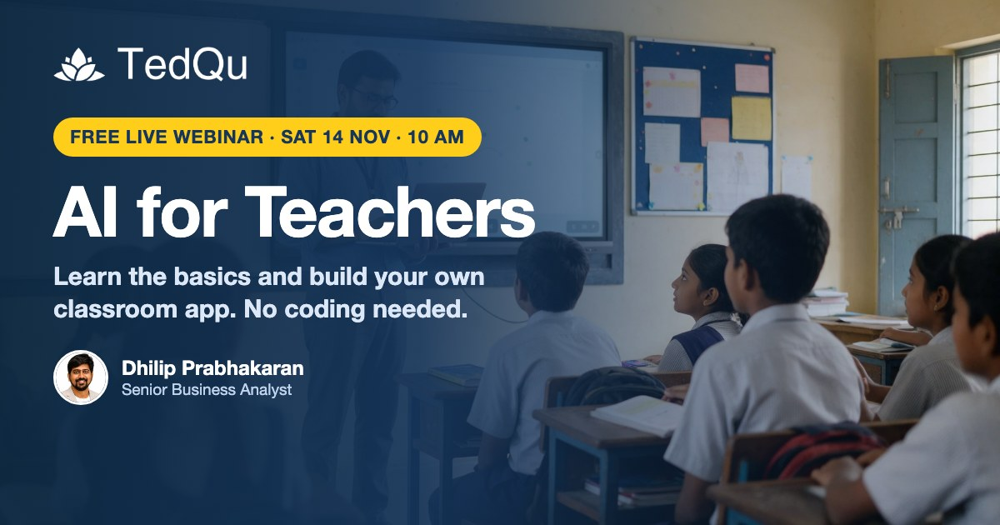

今日舉行
教師 AI 入門：即場做出課堂小程式（免費 webinar）
AI for Teachers: Learn the Basics & Build Your Own Classroom App (No Coding Needed)
90 分鐘免費線上工作坊，面向學校教師：用淺白語言解釋 prompt、model 等詞彙，示範有效提示詞，介紹 ChatGPT、Gemini、Canva、NotebookLM 等免費工具，並即場用自然語言做出課堂用小程式，無需編程。
官方頁標 Free, limited seats，直播平台為 Google Meet。完場或會示範主辦產品 Pulse Card，與本場免費旁聽分開。對象為教師，不是兒童課。
官方連結 →